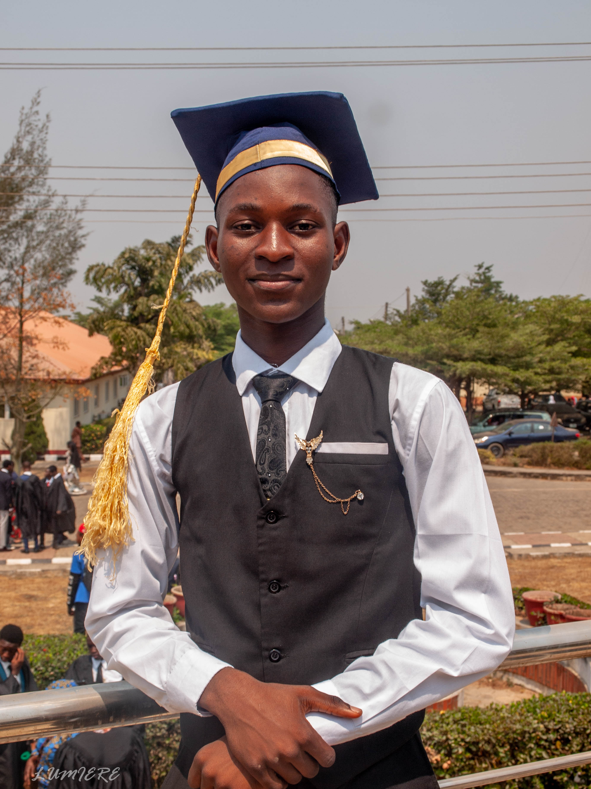

Taiwo Inioluwa Ojo

Summary
I am a hardworking and dedicated individual with experience in Team Building and Leadership skills.
Educational Background
-
Finished Secondary school at Best Legacy International Secondary School, Awe, Oyo State, Nigeria in 2024
-
Currently Pursuing a degree in Computer Science in Redeemers University Ede, Osun State, Nigeria.(2024-2028)
Work Experience
-
I was the Class Captain for all my classes up till secondary school. (2012-2024)
-
I was the assistant head boy of my secondary school. (2024)
Skills
-
I can do a little of graphics design
-
I draw
-
I'm very good at math
Awards
-
I was given an award for being a student with exemplary leadership during my valdictory service in 2024
-
I have two certifications in Mircrosoft 365

-
I have a certification for participating and qualifying in the next round of the International Youth Math Challenge

My Hobbies
Contact Me